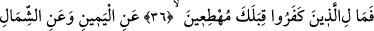
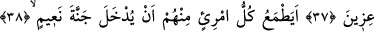
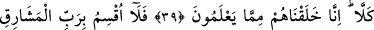
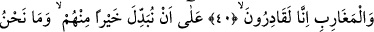
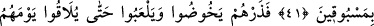
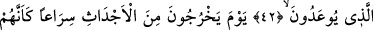
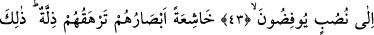
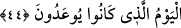

O GÜN KABİRLERİNDEN
FIRLAYA FIRLAYA
ÇIKARLAR
36. (Rasûlüm!) O kâfirlere ne oluyor ki, sana doğru koşuyorlar.
37. Bölük bölük sağından ve solundan.
38. Onlardan her biri Naîm cennetine sokulacağını mı umuyor?
39. Hayır (hiç ummasınlar!) Şüphesiz biz onları, kendilerinin de bildikleri şeyden
yarattık (fakat ibret almadılar, îmâna gelmediler).
40. Şu hâlde (işin gerçeği) öyle (umdukları gibi) değil! Doğuların ve batıların
Rabbine yemin ederim ki, bizim gücümüz yeter.
41. Şüphesiz onların yerine daha iyilerini getirmeye (kâdiriz). Ve kimse bizim
önümüze geçemez.
42. Ama sen onları (şimdilik) bırak da, tehdid edildikleri günlerine kavuşuncaya
dek dalsınlar, oynayadursunlar.
43. O gün onlar, sanki dikili bir şeye koşuyorlar gibi, kabirlerinden fırlaya fırlaya
çıkarlar.
44. Gözleri horluktan aşağı düşmüş ve kendileri zillete bürünmüş bir hâlde. İşte
bu, onların tehdid edilegeldikleri gündür!
“O kâfirlere ne oluyor ki”; yâni o kâfirlere ve burada zikredilen güzel sıfatlarla
bezenmekten mahrum kalmış insanlara ne oluyor ki?
“Ma” istifham-ı inkârîdir, bir şeyin yanlışlığını vurgulamak için sorulan sorudur.
Mübtedâ olarak merfu’dur, “li’llezîne keferû” ifâdesi onun haberidir. “Lam” harf-i